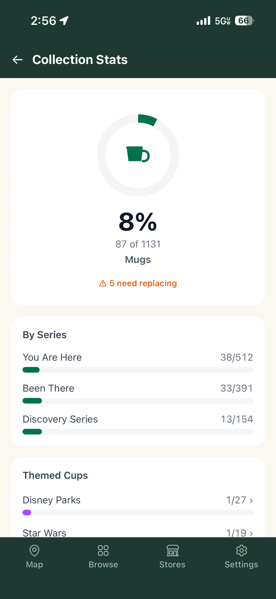
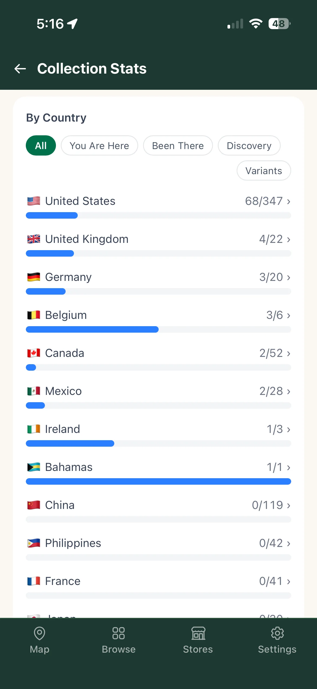
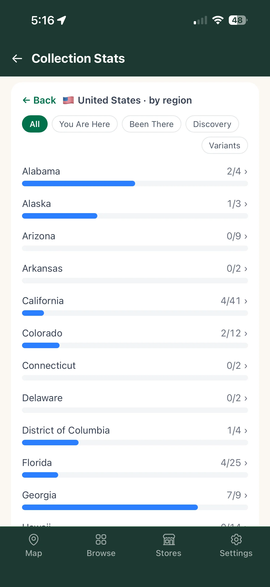
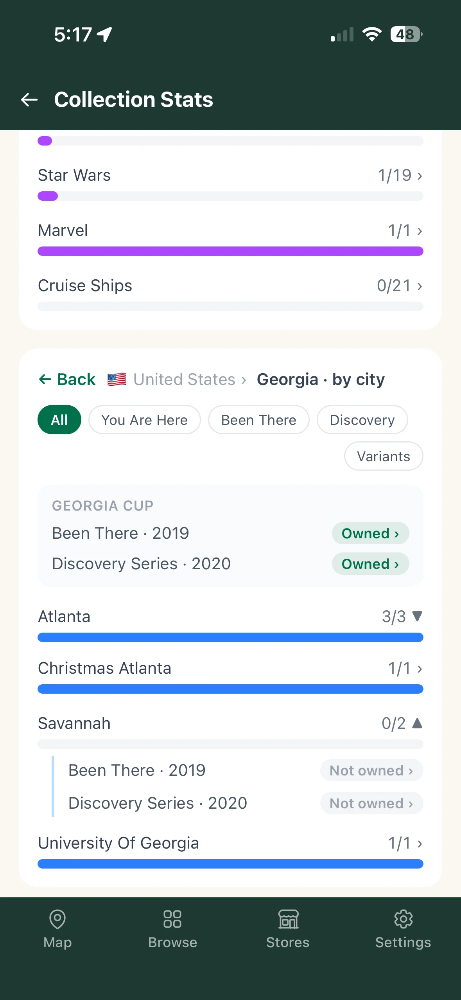

The Collection Stats screen gives you a visual overview of your collection's completeness — broken down by series, country, region, and city.
Open it by tapping the owned/total pill (e.g. 42/1,947 owned ›) in the Browse header.
At the top of the screen, one or two circular progress rings show your overall completion percentage.
Below each ring: the percentage, the owned/total count, and the label. If any owned cups are flagged as needing replacement, a ⚠ X need replacing warning appears beneath the rings — tap it to jump straight to Browse showing only those cups.
Counts respect your collection preferences — excluded series or item types are not counted in the total.

Horizontal progress bars show your completion for each mug series: You Are Here, Been There, and Discovery Series. Each bar shows owned/total and fills proportionally.
Ornaments and themed/special-edition cups are tracked separately in their own cards and do not appear here.
The Themed Cups card appears between By Series and By Country. It covers special-edition cups that aren't tied to a specific real-world location — such as Disney Parks cups, Star Wars planet cups, Marvel cups, and cruise ship cups.
The top level shows a row for each theme group (e.g., Star Wars, Marvel, Disney Parks, Cruise Ships) with your owned/total count and a progress bar. Tap any row to drill into it.
Inside a theme, each cup is listed by name. Tap any cup to open its Cup Detail screen. Tap ← Back in the card header to return to the theme list.
The By Country card lists the top 12 countries by your collection activity, sorted by how many cups you own (most owned first), with total available as the tiebreaker. Each row shows the flag, country name, owned/total count, and a progress bar.
Tap any country row (it shows a ›) to drill into that country's regions.


The By Country card supports three levels of detail:
At the city level, if there is a region-scoped cup (e.g. a Georgia state cup), it appears as a summary block above the city bars — tap it to go to that cup's detail screen.
All three levels stay in sync with the series filter — if you've filtered to "You Are Here", every level shows only You Are Here cups.

Inside the By Country card, a row of chips filters which series the country, region, and city counts are based on:
Switching the series filter resets any open drill-down back to the country list.
Some locations have multiple versions of the same cup — for example, an original "Atlanta" and a later "Atlanta 2". By default, these are counted as one location: the totals reflect how many distinct places you have cups for, and ownership of any variant marks that location as owned.
To see variants counted individually, tap the Variants chip (right edge of the chip row in the By Country card). With variants on, each version adds to the total for its city, giving a more granular view of your collection depth.
When your household tracks ornaments, a separate Ornaments by Country card appears below the main By Country card. It uses the same bar format as the country list but with amber-colored bars and is scoped to ornaments only. It is shown independently from the mug series filter.